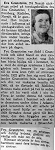

Eva Kristina Forsberg
Bondhustru på Adamsgård 1, Kalvträsk fs, Burträsk sn. Blev 66 år.
| Född: | 1899-01-16 Villvattnet 13, Granträsk, Burträsk fs, Burträsk sn. [1] | |
|---|
| Döpt: | 1899-01-16 Villvattnet 13, Granträsk, Burträsk fs, Burträsk sn. [2] | Jenny Bjurman i Kalfträsk (nöddop). Dopet bekräftat av Sundelin när modern blev kyrkotagen 1899-02-11. Faddrar: K.A. Lundström m. hustru, Karl Ludvig o. Ida Johanna Forsberg. |
|---|
| Levde: | 1910 Villvattnet 13, Granträsk, Burträsk fs, Burträsk sn. [3] | |
|---|
| Levde: | 1918 Villvattnet 13, Granträsk, Burträsk fs, Burträsk sn. [4] | |
|---|
| Död: | 1965-03-18 Risliden 23:1, Norsjö fs, Norsjö kn. [5] | Avled på Norsjö sjukstuga. |
|---|
| Begravd: | 1965-04-03 Norsjö kyrkogård, Norsjö sn. [6] | |
|---|
| Vigsel: | 1922-01-15 Granträsk, Kalvträsk fs, Burträsk sn. [7] | Hemmansägare Karlander Granström, Adamsgård och Hemmansägaredotter Eva Kristina Forsberg, Granträsk. Vigselförrättare: H. Lindkvist. |
|---|
| Levde: | 1933 Adamsgård 1, Kalvträsk fs, Burträsk sn. [8] | |
|---|
| Utflyttad till: | 1961 Risliden 23:1, Norsjö fs, Norsjö kn. | Hela mangårdsbyggnaden flyttades och sattes på ny grund med källare i Risliden. |
|---|
Personhistoria
| Årtal | Ålder | Händelse |
|---|
| 1899 |
|
Födelse 1899-01-16 Villvattnet 13, Granträsk, Burträsk fs, Burträsk sn [1] |
| 1899 |
|
Dop 1899-01-16 Villvattnet 13, Granträsk, Burträsk fs, Burträsk sn [2] |
| 1900 |
1 år |
Brodern Gustaf Elof Forsberg föds 1900-07-24 Villvattnet 13, Granträsk, Burträsk fs, Burträsk sn [3] |
| 1901 |
2 år |
Systern Rut Viktoria Forsberg föds 1901-10-03 Villvattnet 13, Granträsk, Burträsk fs, Burträsk sn [9] |
| 1903 |
4 år |
Brodern Adolf Ruben Forsberg föds 1903-08-23 Villvattnet 13, Granträsk 5, Burträsk sn [3] |
| 1904 |
5 år |
Brodern Adolf Ruben Forsberg dör 1904-02-03 Villvattnet 13, Granträsk 5, Burträsk sn [3] |
| 1904 |
5 år |
Brodern Adolf Ruben Forsberg föds 1904-11-22 Villvattnet 13, Granträsk 5, Burträsk sn [3] |
| 1906 |
7 år |
Systern Tyra Konstantia Forsberg föds 1906-01-23 Villvattnet 13, Granträsk 5, Burträsk sn [3] |
| 1907 |
8 år |
Systern Olga Augusta Forsberg föds 1907-11-22 Villvattnet 13, Granträsk 5, Burträsk sn [3] |
| 1910 |
|
Levde 1910 Villvattnet 13, Granträsk, Burträsk fs, Burträsk sn [3] |
| 1910 |
11 år |
Brodern Fredrik Halvar Forsberg föds 1910-05-14 Villvattnet 13, Granträsk 5, Burträsk sn [3] |
| 1911 |
12 år |
Systern Helga Teresia Forsberg föds 1911-08-16 Villvattnet 13, Granträsk 5, Burträsk sn [4] |
| 1912 |
13 år |
Brodern Per Mauritz (Masse) Forsberg föds 1912-11-07 Villvattnet 13, Granträsk 5, Burträsk sn [4] |
| 1914 |
15 år |
Systern Selma Teresia (Thea) Forsberg föds 1914-03-05 Villvattnet 13, Granträsk 5, Burträsk sn [4] |
| 1918 |
|
Levde 1918 Villvattnet 13, Granträsk, Burträsk fs, Burträsk sn [4] |
| 1922 |
22 år |
Vigsel "Starkast i Burträsk socken" Karlander Granström 1922-01-15 Granträsk, Kalvträsk fs, Burträsk sn [7] |
| 1922 |
23 år |
Dottern Elma Linnea Granström Sjölin föds 1922-07-18 Adamsgård 1, Kalvträsk fs, Burträsk sn [10] |
| 1923 |
24 år |
Dottern Ruth Elvira Granström föds 1923-11-29 Adamsgård 1, Kalvträsk fs, Burträsk sn [11] |
| 1925 |
26 år |
Dottern Ingeborg (Inga) Karolina Granström föds 1925-12-28 Adamsgård 1, Kalvträsk fs, Burträsk sn [12] |
| 1930 |
31 år |
Dottern Ebba Kristina Granström föds 1930-08-15 Adamsgård 1, Kalvträsk fs, Burträsk sn [13] |
| 1930 |
31 år |
Dottern N Granström föds 1930-08-18 Norsjö sjukstuga, Norsjö sn [14] |
| 1930 |
31 år |
Dottern N Granström dör 1930-08-18 Norsjö sjukstuga, Norsjö sn [13] |
| 1933 |
|
Levde "Starkast i Burträsk socken" Karlander Granström 1933 Adamsgård 1, Kalvträsk fs, Burträsk sn [8] |
| 1938 |
39 år |
Fadern Adolf Fredrik Forsberg dör 1938-07-25 Villvattnet 13, Granträsk, Burträsk fs, Burträsk sn [15] |
| 1942 |
43 år |
Dottern Gunbritt Ingegerd Anita Granström föds 1942-01-24 Adamsgård 1, Kalvträsk fs, Burträsk sn [16] |
| 1943 |
44 år |
Modern Selma Theresia Lundström dör 1943-03-02 Villvattnet 13, Granträsk, Burträsk fs, Burträsk sn [17] |
| 1954 |
55 år |
Systern Rut Viktoria Forsberg dör 1954-12-07 Granträsk, Kalvträsk fs, Burträsk sn [18] |
| 1961 |
|
Utflyttad till "Starkast i Burträsk socken" Karlander Granström 1961 Risliden 23:1, Norsjö fs, Norsjö kn |
| 1963 |
64 år |
Maken "Starkast i Burträsk socken" Karlander Granström dör 1963-04-09 Risliden 23:1, Norsjö kbfd, Norsjö kn [19] |
| 1965 |
66 år |
Död 1965-03-18 Risliden 23:1, Norsjö fs, Norsjö kn [5] |
| 1965 |
|
Begravning 1965-04-03 Norsjö kyrkogård, Norsjö sn [6] |
Källor
| [1] | Burträsk C:10 (1898-1899) 31/1899 s.148 k.4/11, AI:15D (1892-1899) fol. 1439 k.8/14, NV - Dödsannonsregistrering 1965-03-24 |
| |
| | |
| [2] | Burträsk C:10 (1898-1899) 31/1899 s.148 k.4/11 |
| |
| | |
| [3] | Burträsk AIIA:1D (1900-1910) fol. 1588 k.4/7 |
| |
| | |
| [4] | Burträsk AIIA:2F (1911-1925) fol. 1991 k.6/8 |
| |
| | |
| [5] | DB, FS / DOR 65, NV - Dödsannonsregistrering 1965-03-20 |
| |
| | |
| [6] | NV - Dödsannonsregistrering 1965-03-24, 1965-04-17 |
| |
| | |
| [7] | Gifta AC SCB E 1/1922 k.3/5 |
| |
| | |
| [8] | Kalvträsk AIIA:1 (1919-1933) fol. 1 k.1/7 |
| |
| | |
| [9] | Kalvträsk AIIA:1 (1919-1933) fol. 315 k.7/7, NV - Dödsannonsregistrering 1954-11-24 |
| |
| | |
| [10] | Födda AC Kalvträsk 35/1922 k.8/14, Mtl Stockholms stad och län 1971 |
| |
| | |
| [11] | Födda AC Kalvträsk C: 43/1923 k.9/15 |
| |
| | |
| [12] | Födda AC Kalvträsk C: 40/1925 k.8/15 |
| |
| | |
| [13] | Födda AC Kalvträsk 24/1930 k.7/15 |
| |
| | |
| [14] | Födda AC Kalvträsk 25/1930 k.7/15 |
| |
| | |
| [15] | NV - Dödsannonsregistrering 1938-07-28 |
| |
| | |
| [16] | Mtl Västerbottens län 1971 |
| |
| | |
| [17] | NV - Dödsannonsregistrering |
| |
| | |
| [18] | NV - Dödsannonsregistrering 1954-11-24 |
| |
| | |
| [19] | DB, FS / DOR 63 / UTD 61-67, NV - Dödsannonsregistrering 1963-04-17, 1897-07-17 |
| |
|
 |
| 1946-05-11. Mor Eva Granström, Ruth Granström och Ingvar Fredman, far Karlander Granström och brudnäbben systern Gun-Britt Granström. |
| |
|  |
| 1965-03-20. Nekrolog i Norra Västerbotten. |
|

{kind=link}